Soy desarrolladora de software apasionada por la tecnología, con un enfoque en la creación de soluciones innovadoras y eficientes.
Me encanta aprender y enfrentarme a nuevos retos.
Objetivo: Contribuir a proyectos que impacten positivamente a la sociedad mediante el uso de la tecnología,
así como seguir desarrollando mis habilidades en programación y diseño de software.
Habilidades
Programación en Python y JavaScript
Diseño y desarrollo de software
Análisis y modelado UML
Trabajo en equipo y resolución de problemas
Proyectos
BeautyWave
Descripción: Aplicación de citas para un salón de belleza específico, donde los clientes pueden agendar servicios y los administradores reciben notificaciones de nuevas reservas.
Tecnologías utilizadas: FlutterFlow
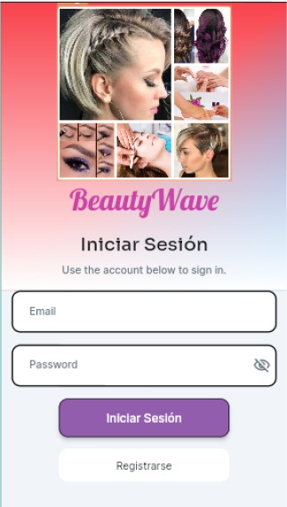
Hospedaje Hotelero Hidalgo
Descripción: Aplicación web y móvil para la gestión de reservas en hoteles, permitiendo a los clientes reservar habitaciones.
Tecnologías utilizadas: FlutterFlow
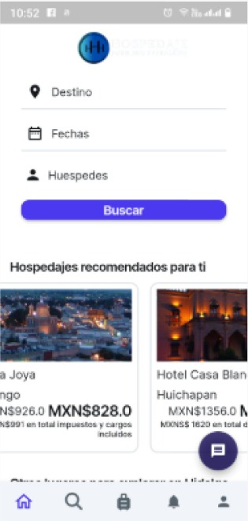
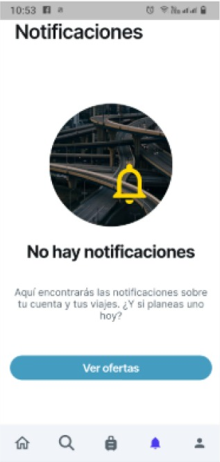
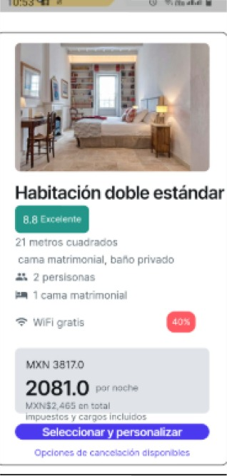
Butterfly
Descripción: Plataforma para gestionar la reserva y pago de clases de ballet, permitiendo a las alumnas registrarse con su nombre y contraseña. Incluye funciones para la creación de nuevas alumnas con botones de "crear", "crear y enviar" y "cancelar".
Tecnologías utilizadas: FlutterFlow, Firebase
Tecnologías que manejo
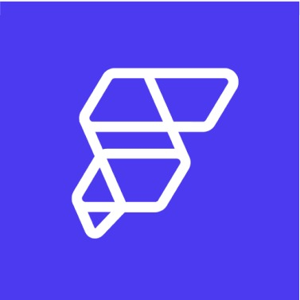
FlutterFlow
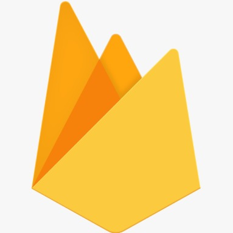
Figma
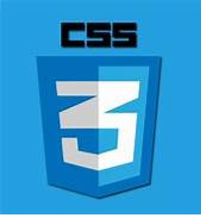
HTML
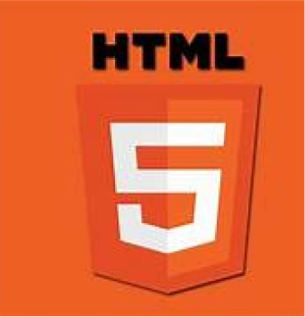
CSS
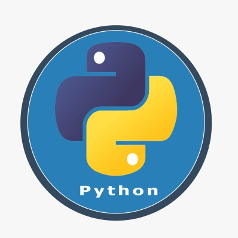
JavaScript
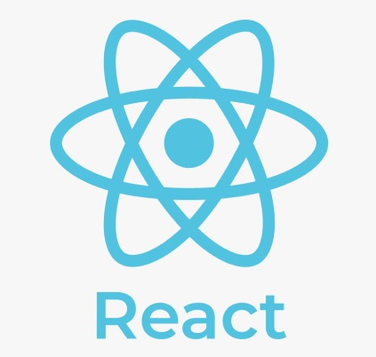
React
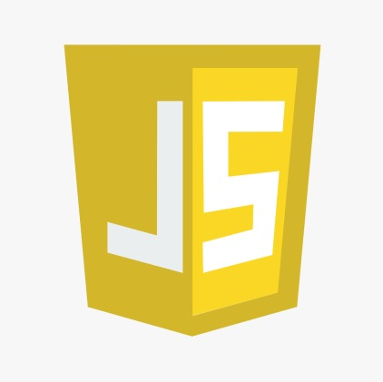
Firebase
Cursos y certificaciones
Remote Work Professional Certification (RWPC) – CertiProf
Fecha: [Julio/2024]
Certificación que acredita mis conocimientos en trabajo remoto, abarcando mejores prácticas, uso de herramientas digitales y estrategias para optimizar la productividad en entornos virtuales.
Scrum Foundation Professional Certification (SFPC) – CertiProf
Fecha: [Mayo/2024]
Certificación que valida mi comprensión de los principios y fundamentos de Scrum, su marco de trabajo, roles, eventos y artefactos, esenciales para la implementación de metodologías ágiles en proyectos de desarrollo.
Diploma en FlutterFlow – Google & FlutterFlow
Fecha: [Junio/2024]
Certificación que reconoce mis habilidades en el uso de FlutterFlow, una plataforma sin código para el desarrollo de aplicaciones móviles, respaldada por Google, para la creación de aplicaciones de manera eficiente y rápida.
Estudios
Desarrollo de Software
Universidad Tecnológica de la Sierra Hidalguense – 8° Octavo Cuatrimestre
Promedio Cuatrimestral: 9.5
Descripción: Actualmente cursando la carrera en Desarrollo de Software, y a lo largo de la formación he adquirido conocimientos en programación, desarrollo web, bases de datos y diseño de sistemas, participando activamente en proyectos académicos y colaborativos que refuerzan mi aprendizaje práctico.
Experiencia laboral
Desarrollador de Aplicaciones (Proyecto Escolar)
Cafetería Escolar – Universidad Tecnológica de la Sierra Hidalguense
Desarrollé una aplicación móvil para la cafetería de la universidad, diseñada para mejorar la eficiencia del proceso de pedidos. La aplicación permitía a los estudiantes visualizar el menú de productos disponibles y realizar pedidos antes de finalizar sus clases. Los empleados de la cafetería recibían los pedidos, los preparaban y, una vez listos, los estudiantes podían recoger su comida y realizar el pago en el lugar. Este sistema redujo el tiempo de espera y mejoró la experiencia tanto para los estudiantes como para el personal.
.png)
.png)
.png)

.png)
.png)
.png)
.png)